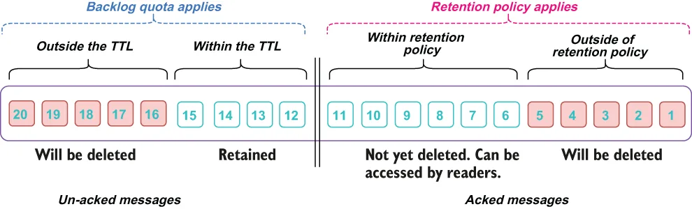

Message retention and message expiration solve two fundamentally different problems. As you can see in figure 2.18, message retention policies only apply to acknowledged messages, and those messages that fall within the retention policy are retained. Message expiration only applies to unacknowledged messages and is controlled by the TTL setting, meaning any messages that are not processed and acked within that timeframe are discarded and not processed.
消息保留与消息过期解决的是两个根本不同的问题。正如你在图 2.18 中看到的，消息保留策略只适用于已被确认的消息，而落在保留策略范围内的那些消息会被保留下来。消息过期只适用于未被确认的消息，并由 TTL 设置控制，这意味着任何在该时间范围内未被处理和确认的消息都会被丢弃，且不会被处理。
Message retention policies can be used in conjunction with tiered storage to support infinite message retention for critical datasets you want to retain indefinitely for backup/recovery, event sourcing, or SQL exploration.
消息保留策略可以与分层存储结合使用，以便为那些你希望无限期保留的关键数据集（用于备份/恢复、事件溯源或 SQL 探查）提供无限的消息保留能力。

Figure 2.18 The backlog quota applies to messages that have not been acknowledged by all subscriptions and is based on the TTL setting, while the retention policy applies to acknowledged messages and is based on the volume of data to retain.
图 2.18 积压配额适用于尚未被所有订阅确认的消息，并基于 TTL 设置；而保留策略适用于已确认的消息，并基于要保留的数据量。